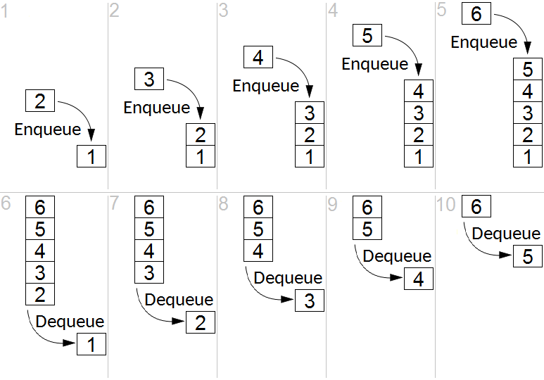

What do they do? Do they do useful things? Let’s find out!
John McGrath
2026-11-03
What’s a queue
Instead of doing something in a single program on a single machine, you store a record that it should be done, stick that record in a separate system, and some other program does it later.
It’s like Kanban for computers.
What’s in a queue?
Break it on down
To improve that we break it up into threeish pieces:
Producer
Loops through the input list, enqueues a job to be done and the input needed to do it
Queue
Holds each job and the input the worker needs to run it.
Worker(s)
Pulls (dequeues) jobs from the queue, runs them, saves output, and tells the queue that that job is done.
DB somewhere, prolly
Why? They let you…
Restart (instance dies at row 899,999 of 1M? No problem.)
Delay (send all the emails when the market closes)
Use resources more efficiently (different size instances for different jobs)
Scale by parallelizing (queue 1M jobs, run 100 workers, finish 100x faster)
Buffer jobs (don’t block on slow job, queue it and proceed)
Prioritize: bank transaction to the fast queue, send newsletter to slow queue)
Ensure things get done (job still in queue? Not done)
// videos_table contains a million rows
// loop through the whole damn thing
// on one machine, until you’re done
for each video in videos_table
/* Slow, memory-intensive processing job
done inline,one row at a time */
end
The Producer
for each video in videos_table
where resize_job_id is null:
job = resize_system.queue_job(
video_url = video.url,
width = video.target_width,
height = video.target_height
)
update video_table
set resize_job_id = job.id
where video_id = video.image_id
The Queue
Outside data store, most commonly FIFO. Managed Redis is good.

Thanks Wikipedia
Example: video processing
The input DB table contains 100,000 videos, their URLs, and the dimensions they should be resized to.
Code loops through the table, enqueues a job, and records the job_id back into the table.
Separately, you spin up a bunch of workers to burn down the queue.
The Workers
while true:
job = queue.dequeue() // blocks until a job is available
video = download(job.video_url)
resized_video = resize_video(
video,
width = job.target_width,
height = job.target_height
)
save(resized_video)
queue.mark_complete(job.id)
Every language supports queues
Some popular libraries:
Python: Celery
Erlang: RabbitMQ. Yes, Erlang, but a million client libraries in every language
JavaScript: BullMQ
Java: Spring Batch
Ruby: ActiveJob
More on efficiencies
Parallelization
Different instance sizes for different job
Single thread doesn’t hold memory, jobs use what they need and disappear
Spin down to zero: have a watcher process look at the queue. If it’s empty for a while, spin everything down. When something appears in it, spin up a container to take care of it.
Conversely, if if the watcher sees the queue rapidly growing, it can spin up more and more instances to burn it down.
You can have multiple queues for the same job, and use those to prioritize: the fast queue always takes precedence, when that’s empty the slow queue gets burned down.
You can design correctly but working locally
Ways to design for queues without all the yucky cloud and CI/CD stuff:
You can configure Celery with task_always_eager (or ActiveJob to inline,etc) and that’s what it does–just runs it synchronously. But all the programming semantics stay the same so when you move to prod, you just change the configuration.
Although with Docker you can spin up real, albeit not very productiony, queue and worker instances local, and do it more real. Might as well reall–just ask AI.